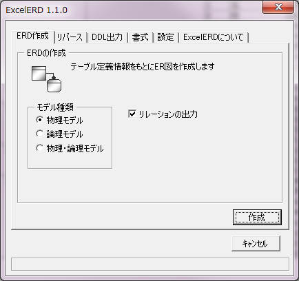
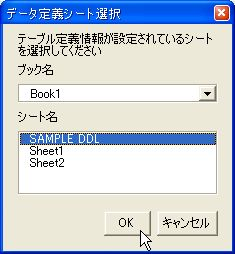
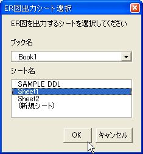
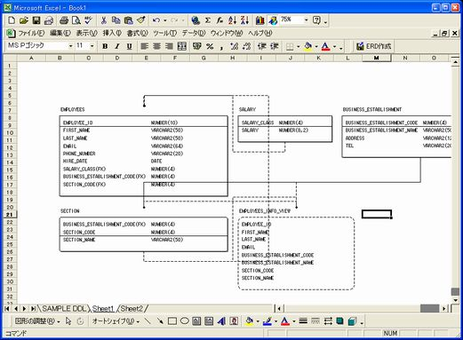

ExcelERD |
テーブル定義シートに基づいてER図を作成します。リバースエンジニアリングを行うには、こちらを参照してください。
「ERD作成」タブを開き、作成 ボタンを押してください。

| 項目名 | 内容 |
|---|---|
| モデル種類 | 作成するER図の種類を設定します。 |
| リレーションの出力 | チェックONで、テーブル間の依存関係を表す、リレーションシップを出力します。 チェックOFFの場合、テーブルおよびビューオブジェクトのみ出力します。 |
データベース定義シートを選択します。

ER図を出力するシートを選択します。

※「(新規シート)」を選択すると、新たにシートを作成します。
